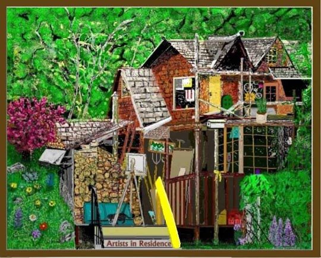
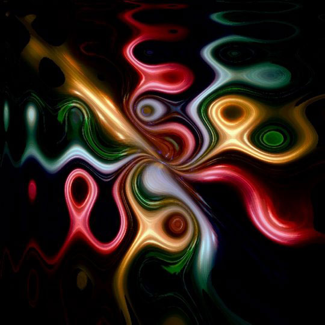
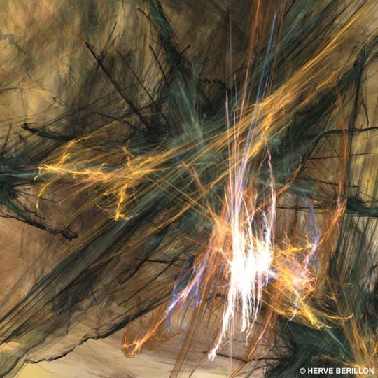
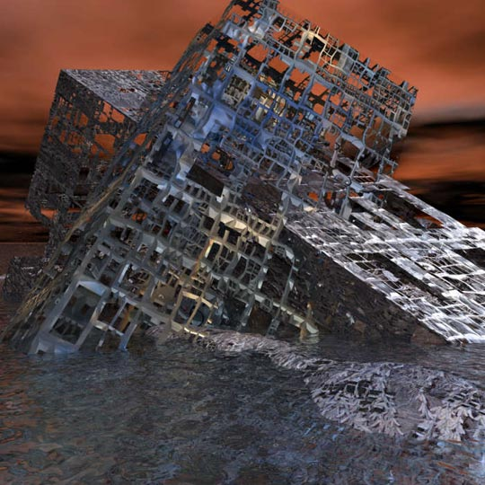
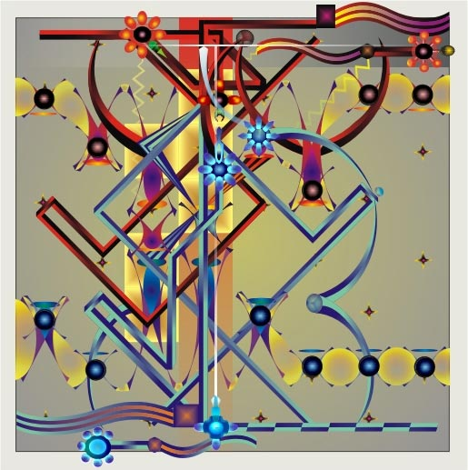
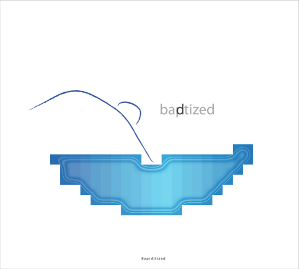

Artists in Residence 
by Howard Ballard
Primitivism
07/01/2021
Picasso Rose 
by KKC Bauder
07/02/2021
Tableau Anarchy 
by Herve Berillon
07/03/2021
Blue
by Pauline Black
07/04/2021

An Object of Lavish Abundance
by Clay Bodvin
07/05//2021
Cross to Bear 
by Thomas Broadfoot
07/06/2021
Time
by Kenneth Clare
07/07/2021
Nine to Five and Back 
by Andrew Cole
07/08/2021
Bap(d)tized 
by Bart Daems
07/09/2021
Tears of Sherazade
by Vincenzo Corrado
07/10/2021